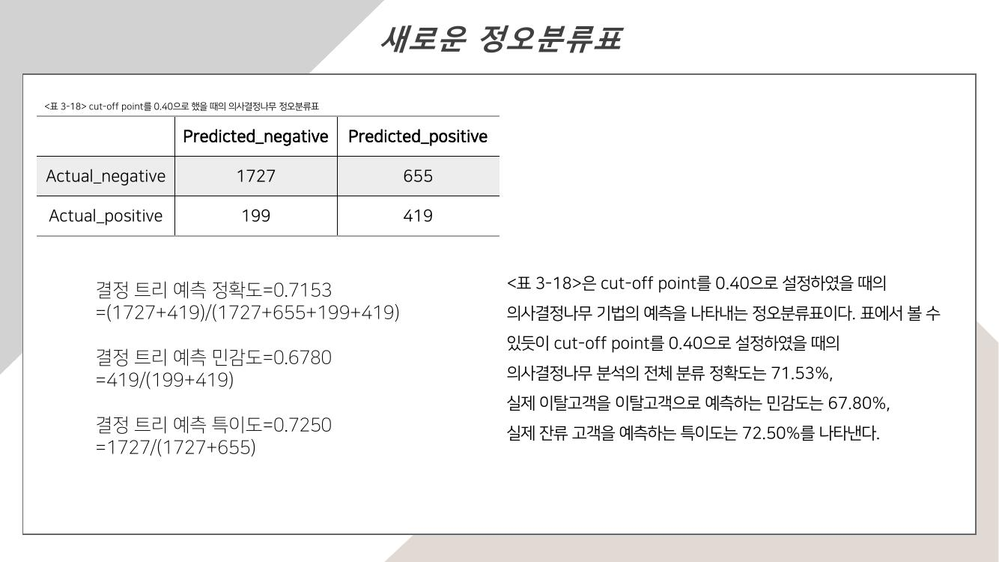

01 주제
고객의 인구통계학적 특성과 금융거래 정보를 활용해 이탈에 영향을 미치는 요인을 파악하고, 이탈 가능성이 높은 고객을 사전에 식별하는 예측모형을 구축했습니다. 분석 결과는 고객 특성에 맞는 유지 전략을 제안하는 데 활용했습니다.
전체 예측 정확도가 높더라도 실제 이탈 고객을 많이 놓친다면 고객 이탈 방지라는 목적에 적합한 모델이라고 볼 수 있을까?
02 분석 내용
신용점수, 국가, 성별, 나이, 거래기간, 계좌잔고, 이용 상품 수, 신용카드 보유 여부, 활동 여부, 추정 급여를 활용했습니다. 탐색적 분석에서 이탈 고객이 전체의 약 20%로 적어 모델이 잔류 고객 중심으로 학습할 수 있음을 확인했습니다.
SMOTE 적용 전후의 의사결정나무 성능을 비교하고, 로지스틱 회귀모형과도 성능을 비교했습니다. 평가에는 정확도와 함께 민감도, 특이도, ROC-AUC를 사용했으며 최종 단계에서는 예측 확률의 임계값을 조정했습니다.
03 분석 방법
- STEP 1식별정보 검토와 범주형 변수 변환
- STEP 2고객 특성별 이탈 분포 탐색
- STEP 3SMOTE 적용과 모델 학습
- STEP 4평가지표와 임계값 비교
전처리와 탐색
- 고객 ID와 성처럼 예측 의미가 낮은 식별정보를 검토했습니다.
- 국가와 성별을 모델에 사용할 수 있도록 변환하고 나이를 10세 단위로 범주화했습니다.
- 성별, 국가, 활동 여부, 상품 수와 수치형 변수의 분포를 이탈 여부에 따라 비교했습니다.
모델과 평가
- 의사결정나무는 최대 깊이 10, 부모마디 최소 관측치 32, 자식마디 최소 관측치 2로 설정했습니다.
- 로지스틱 회귀는 전체 변수 모형과 변수 선택 모형을 비교했습니다.
- 정확도, 민감도, 특이도, ROC-AUC와 정오분류표를 함께 확인했습니다.
04 분석 결과
SMOTE 적용 전 의사결정나무는 정확도 83.90%였지만 민감도가 40.78%에 그쳤습니다. SMOTE 적용 후 정확도는 74.17%로 낮아졌고 민감도는 61.17%로 상승했습니다. 이탈 고객 탐지가 목적이라면 정확도 하락만으로 모델을 평가하기 어렵다는 점을 확인했습니다.
| 모델 | 정확도 | 민감도 | 특이도 | ROC-AUC |
|---|---|---|---|---|
| 의사결정나무 | 74.17% | 61.17% | 77.54% | 0.7706 |
| 로지스틱 회귀 | 70.73% | 67.14% | 71.71% | 0.7532 |
| 변수 선택 로지스틱 | 69.27% | 66.02% | 70.11% | 0.7270 |
의사결정나무의 임계값을 0.50에서 0.40으로 조정하자 정확도 71.53%, 민감도 67.80%, 특이도 72.50%로 세 지표가 비교적 균형 있게 나타났습니다. 최종적으로 임계값 0.40을 적용한 의사결정나무를 선택했습니다.

주요 발견과 활용 제안
고객 활동 여부의 변수 중요도가 가장 높았고, 이용 상품 수, 성별, 연령대, 계좌잔고가 뒤를 이었습니다. 비활동 고객과 40대 이상 고객의 이탈 가능성이 상대적으로 높았습니다. 이에 비활동 고객의 재이용 유도, 연령대별 혜택, 상품 간 연계 보상체계를 고객 유지 방안으로 제안했습니다.
05 내 기여도
고객 이탈 데이터의 불균형을 확인하고 SMOTE 적용 전후 결과를 비교했습니다. 정확도가 낮아지는 대신 민감도가 40.78%에서 61.17%로 높아진 점에 주목해, 이탈 방지 목적에는 실제 이탈 고객 탐지율을 함께 봐야 한다는 평가 방향을 제시했습니다.
의사결정나무와 로지스틱 회귀의 성능을 여러 지표로 비교하고 임계값별 변화를 검토해 최종 모델을 선정했습니다. 결과를 비활동 고객, 40대 이상 고객, 다상품 이용 고객에 대한 관리 전략으로 연결했습니다.
06 프로젝트 자료
보고서와 테이블 정의서는 새 창에서 열리고, 전체 자료는 ZIP으로 내려받을 수 있습니다.